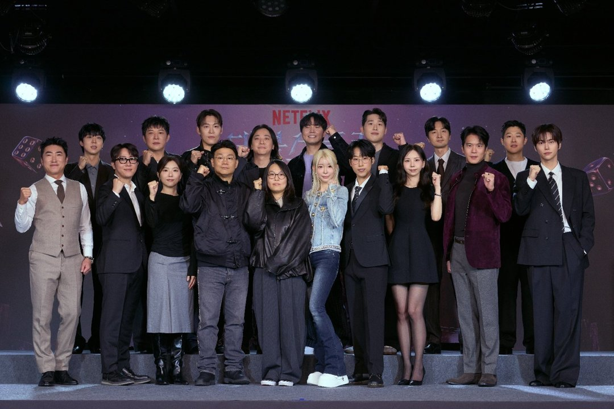
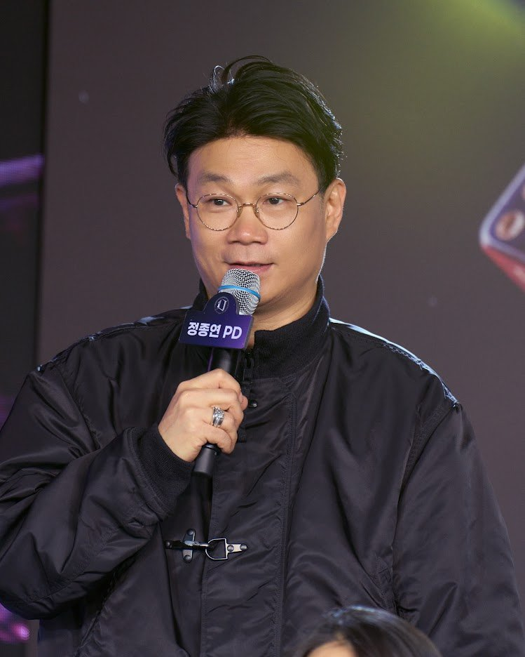
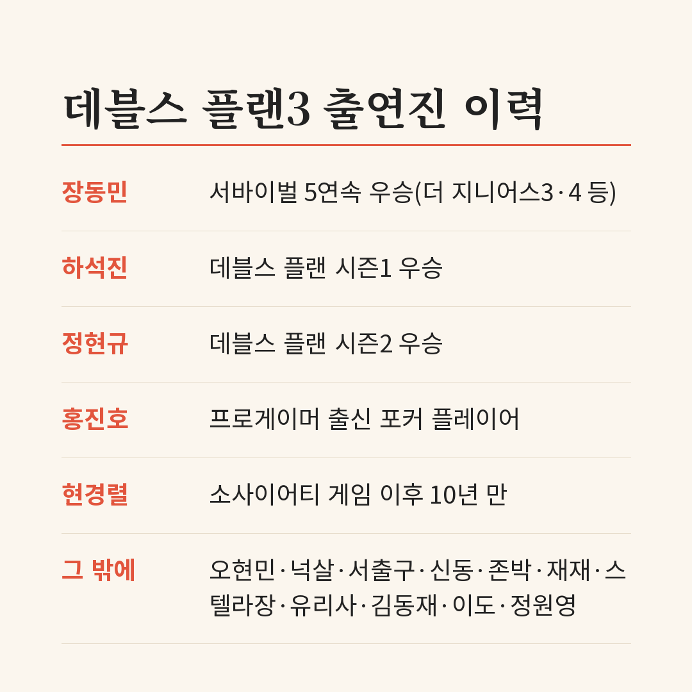
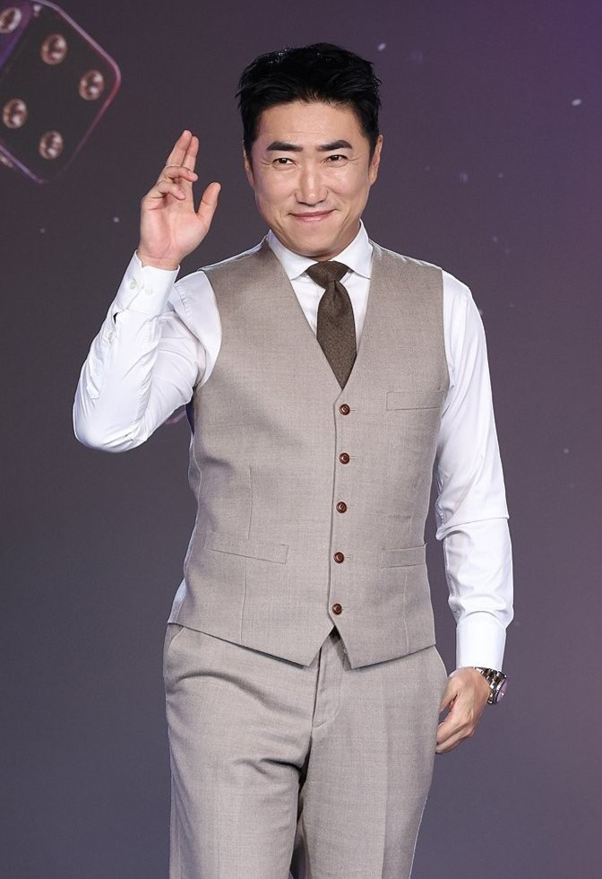
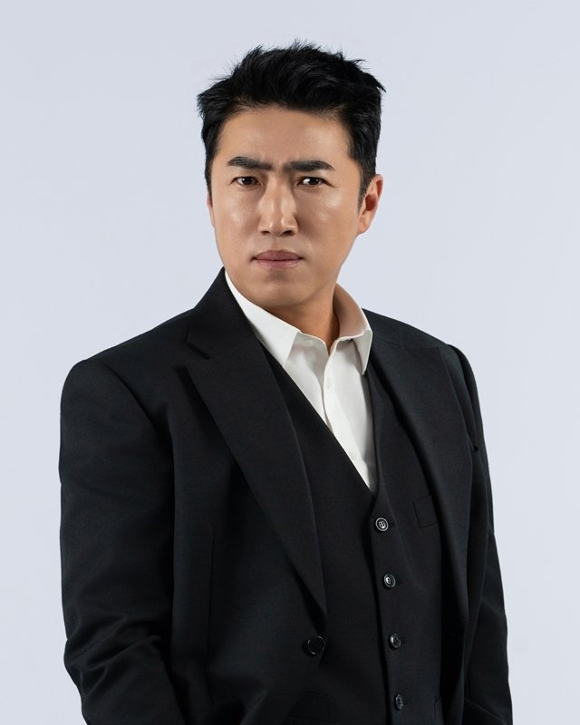
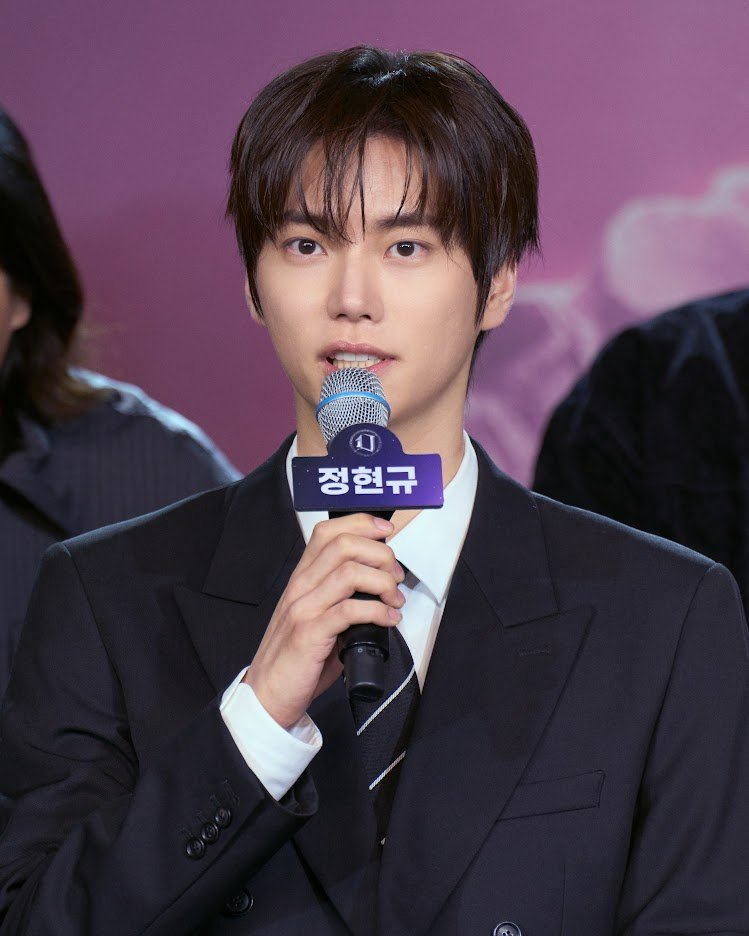
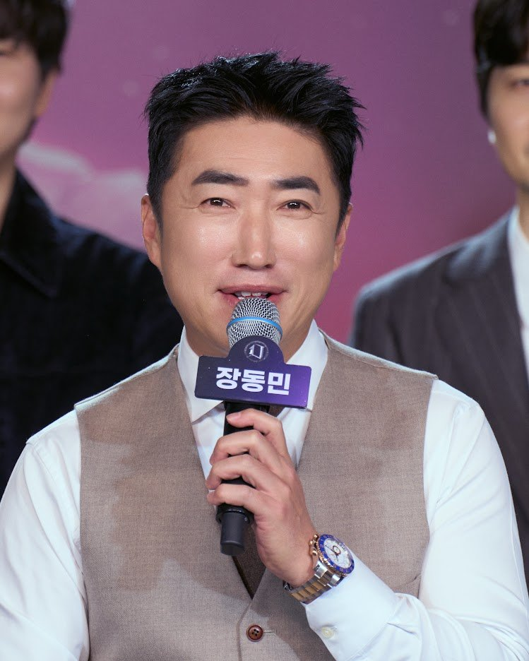

"드디어 악마가 초대됐다." 장동민이 '데블스 플랜: 데드 어게인' 제작발표회에서 꺼낸 첫 소감이에요. 넷플릭스 두뇌 서바이벌 데블스 플랜의 세 번째 시즌에는 역대 우승자와 다른 서바이벌에서 이름을 알린 사람들이 한꺼번에 모였어요. 첫 공개 전에 출연진과 규칙 변화를 정리했어요.
📷 사진 1 자리
▲ 11월 5일 '데블스 플랜: 데드 어게인' 제작발표회에 선 출연진과 정종연·최윤희 PD · 사진=넷플릭스 제공
서바이벌 경험자를 일부러 불렀다
이번 시즌의 출발점은 섭외 기준이에요. 정종연 PD는 그동안 서바이벌 경험이 없는 사람을 원칙으로 뽑아 왔는데, 이번엔 그 기준을 깨 보고 싶었다고 했어요. 경험이 있는 사람의 두 번째 도전은 어떨지 궁금했다는 거예요.
📷 사진 2 자리
▲ 섭외 기준을 설명하는 정종연 PD · 사진=넷플릭스 제공
그래서 출연진은 세 갈래로 꾸려졌어요. 먼저 우승 경험자, 다음은 우승은 못 했어도 프로그램의 흐름을 바꿨던 사람, 마지막은 이들에게 밀리지 않을 새 얼굴이에요. 부제 '데드 어게인'도 여기서 나왔어요. 정 PD는 서바이벌은 원래 죽으러 오는 곳이고, 이번엔 "두 번 죽으러 왔다"는 뜻으로 봐 달라고 했어요.
참가자는 시리즈 최다인 16명이에요. 장동민, 홍진호, 하석진, 오현민, 정현규, 넉살, 서출구, 신동, 존박, 재재, 스텔라장, 유리사, 김동재, 이도, 정원영, 현경렬이 이름을 올렸어요.
📷 사진 3 자리
우승자만 셋, 그 한가운데 장동민
가장 눈에 띄는 건 우승 경력이에요. 하석진은 시즌1, 정현규는 시즌2 우승자이고, 장동민은 '더 지니어스' 시즌3·4, '소사이어티 게임2', '피의 게임3' 등에서 서바이벌 5연속 우승 기록을 갖고 있어요. 정 PD는 장동민을 두고 "NBA라면 마이클 조던을 모신 것"이라고 했어요.
📷 사진 4 자리
▲ 제작발표회에 정장 조끼 차림으로 나온 장동민 · 사진=넷플릭스 제공
▶ 영상 1 자리
장동민 본인은 견제를 각오하고 들어갔다고 했어요. 다른 출연자라도 첫날부터 자신을 떨어뜨리려 했을 거라면서, "견제가 심할수록 강해진다"는 말로 6번째 우승 도전을 예고했죠.
📷 사진 5 자리
▲ '데블스 플랜: 데드 어게인' 장동민 · 사진=넷플릭스 제공
나머지 우승자들도 저마다 말을 남겼어요. 하석진은 이번 라인업을 연애 프로그램 인기 출연자만 모아 다시 연애를 시킨 느낌이라고 표현했어요. 정현규는 지난 시즌 플레이를 두고 나온 비판에 "시청자분들을 미처 생각하지 못했다"며, 더 성숙한 자세로 다시 증명하고 싶었다고 출연 이유를 밝혔어요.
📷 사진 6 자리
▲ 제작발표회에서 출연 이유를 밝히는 시즌2 우승자 정현규 · 사진=넷플릭스 제공
▶ 영상 2 자리
경력자는 우승자만이 아니에요. 홍진호는 서바이벌에서 살아남는 법으로 "튀지 않고 가만히 있어도 중간은 간다"는 말을 내놨고, 장동민과 다시 만난 오현민은 "영원한 연합은 없을 수도 있다"는 점을 염두에 두고 보라고 했어요. 현경렬은 '소사이어티 게임' 이후 10년 만의 서바이벌 출연이에요.
▶ 영상 3 자리
피스를 다 잃어도 탈락하지 않는다
규칙에서 가장 큰 변화는 탈락 조건이에요. 이전 시즌에는 피스를 모두 잃으면 탈락했는데, 이번엔 그렇지 않아요. 최윤희 PD는 피스 개수가 아니라 "진짜 게임으로" 플레이어의 운명이 정해진다고 설명했어요.
생활동과 감옥동 사이의 이동도 잦아졌어요. 지난 시즌에는 한번 정해진 자리가 굳어지는 경향이 있었는데, 이번엔 오가기 쉽게 장치를 바꿨다고 해요. 피스를 지키는 것보다 매 게임 결과가 중요해지는 구조라, 초반에 밀린 플레이어도 다시 올라올 여지가 생긴 셈이에요.
📷 사진 7 자리
▲ 제작발표회에서 발언하는 장동민 · 사진=넷플릭스 제공
게임 자체도 두뇌 쪽으로 무게를 옮겼어요. 정 PD는 이번 시즌을 '순수한 두뇌 게임'에 주안점을 두고 만들었다고 했고, 장동민은 이를 '뇌지컬'로 승부하는 시즌이라고 불렀어요.
정리하면서 가장 눈길이 간 건 '피스를 다 잃어도 탈락하지 않는다'는 규칙이에요. 우승자 셋이 모인 판에서 초반에 밀린 새 얼굴도 다시 올라올 길이 열린 셈이라, 경력자끼리의 싸움으로만 흘러가지 않을 것 같아요. 지난 시즌을 안 봤다면 장동민·홍진호·오현민의 관계만 알고 들어가도 충분해 보여요.
데블스 플랜3는 서바이벌 경험자를 일부러 모은 16명이 피스를 잃어도 탈락하지 않는 규칙으로 겨루는 시즌이에요. 11월 10일 넷플릭스에서 공개돼요.






